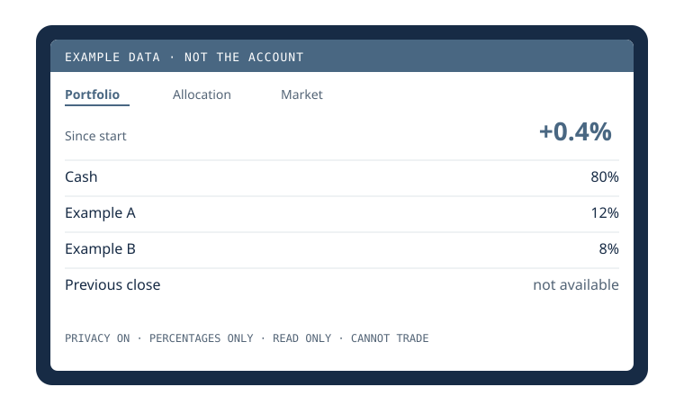

The problem
I wanted a glanceable view of the account on my desk. A phone app shows dollars, and it is easy to leave that screen where someone else can read it. The display had to work on a small, cheap computer, hide dollar figures when I ask it to, and refuse to invent a number it does not have.
How it works
The hardware is a 7-inch screen at 1024×600, on a Raspberry Pi Zero 2 W with 512 MB of memory. Charts are hand-written SVG, with no frontend packages, so the page fits in that memory.
- PortfolioThe account, as percents in privacy
- AllocationHow the account is split
- MarketSession context
- RecapAfter the close
- PrivacyOn until I choose otherwise
- Three pages. Portfolio, Allocation, and Market. I swipe between them. There is an after-close recap.
- Hours. The screen is scheduled from 8:00 AM to midnight ET.
- Privacy. It opens in Privacy until a choice is saved. Privacy hides every dollar figure and shows percentages.
- Read-only. The browser talks only to a server on 127.0.0.1. That server can read the account. It exposes no trading controls and no credentials. Credentials stay in encrypted Windows storage.

A decision I changed
The first impulse was to keep the screen full. If a price was missing, show the last one, or fill the gap with sample numbers, so the Pi never looked broken. I changed that.
A missing figure stays missing, and the screen says so. The preview I use while building is allowed to show made-up numbers, and those screens are labeled example data. They are not a silent fallback for the live account.
Status
The display is built. The scope was committed Oct 1, 2026. On Nov 9, 2026, 60 tests passed. The suite covers the privacy view, missing values, and market hours. A history of live performance is not finished.
Open questions
- It has not been through a 24-hour run on the physical Pi.
- It still needs a reliable source for historical performance and the previous close.
- The Pi Zero itself has not been validated as the machine that runs it day to day.